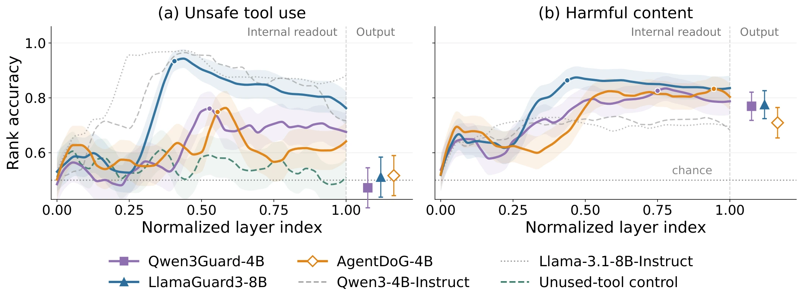
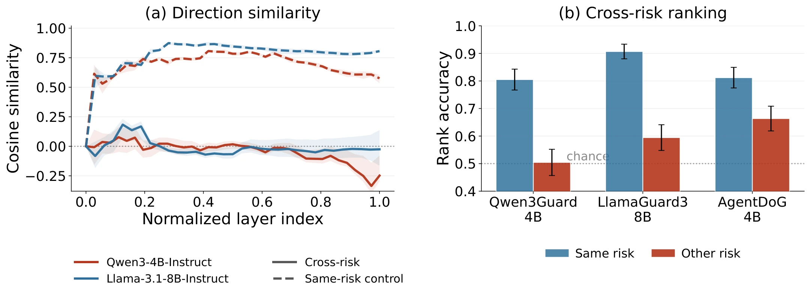
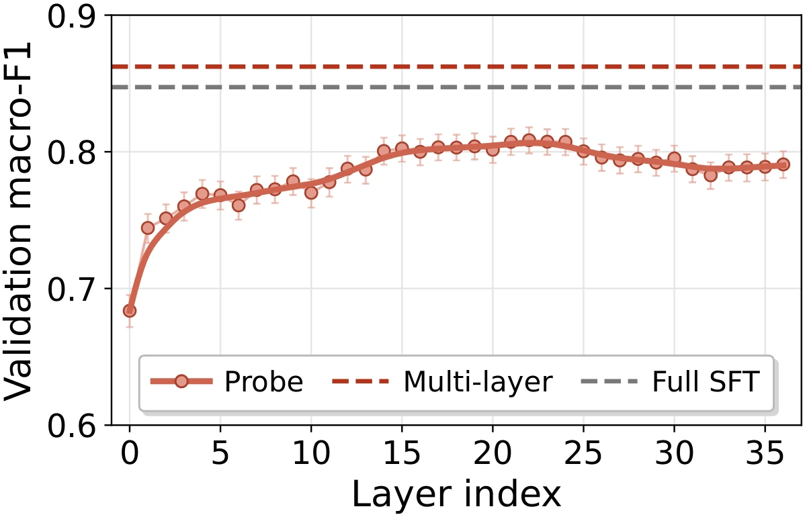
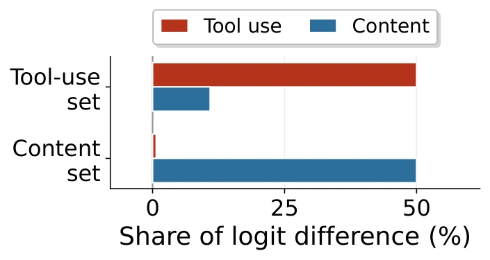

Unsafe tool use is readable inside the model
The signal peaks in intermediate layers and declines toward the final layer. The generated verdict does not preserve the full distinction.
Agent trajectory safety from internal states
Trajectory sAfety Classifier from Internal sTates
Detecting harmful agent trajectories from LLM internal states
TACIT runs a complete trajectory through a frozen LLM once, then scores its safety from the resulting internal states. It returns an unsafe probability without decoding a textual verdict or accessing the monitored agent’s weights.
Mechanistic analysis
Matched trajectory pairs isolate harmful content and unsafe tool use. They let us compare the evidence inside a model with the verdict it generates.

The signal peaks in intermediate layers and declines toward the final layer. The generated verdict does not preserve the full distinction.
Same-risk split halves reach 0.81 similarity in Qwen and 0.87 in Llama. Cross-risk directions remain close to orthogonal through most layers.

Method
TACIT preserves the system prompt, tool schemas, message roles, and turn order when it renders a trajectory with the backbone’s chat template.
The complete interaction is formatted as the backbone expects it.
A frozen backbone runs once. Each layer is pooled by its last token or mean activation.
Validation folds inside the training pool select the Probe layer and pooling rule, along with each readout’s settings.
Smallest
An L2-regularized logistic regression reads standardized activations from one validation-selected layer.
Several probes
Several fitted probes contribute predictions, which are averaged into one trajectory score.
Best mean F1
Salient coordinates from multiple layers are selected and integrated by a compact classifier.
All three use class and benchmark weighting. The backbone remains frozen throughout training.
Evaluation
The training portions of all six datasets form one pool. Validation folds within that pool select each readout’s configuration, and each held-out test portion is scored once.
| System | R-Judge | TraceSafe | ATBench | ASSEBench | OAS | AgentDojo | Mean |
|---|---|---|---|---|---|---|---|
| Qwen3Guard-4B | 32.2 | 34.7 | 36.8 | 43.6 | 38.2 | 15.8 | 33.6 |
| LlamaGuard3-8B | 66.3 | 48.6 | 38.9 | 60.6 | 35.9 | 21.1 | 45.2 |
| AgentDoG-4B | 92.7 | 44.7 | 63.3 | 81.4 | 43.3 | 37.7 | 60.5 |
| TACIT · Qwen3-4B | |||||||
| Probe | 95.0 | 77.5 | 93.5 | 85.2 | 67.9 | 65.1 | 80.7 |
| Ensemble | 97.0 | 88.7 | 95.0 | 88.5 | 72.0 | 71.0 | 85.4 |
| Multi-layer | 97.0 | 86.5 | 94.5 | 89.8 | 72.7 | 76.9 | 86.2 |
| TACIT · Llama3.1-8B | |||||||
| Probe | 98.0 | 78.6 | 90.0 | 88.0 | 69.0 | 66.6 | 81.7 |
| Ensemble | 97.0 | 90.1 | 93.5 | 88.7 | 72.7 | 68.8 | 85.1 |
| Multi-layer | 97.0 | 89.6 | 95.0 | 88.5 | 69.8 | 72.2 | 85.4 |
Matched-data comparison
Frozen Multi-layer readouts perform on par with full SFT. Applying the readout after fine-tuning raises Qwen3-4B from 84.2 to 86.5 and Llama3.1-8B from 85.8 to 87.0.
Efficiency
TACIT fits its readout without backpropagating through the LLM. At inference, the backbone runs once and the head adds less than one millisecond.
Trainable parameters
2,561for the Qwen Probe, versus 4.0B for full SFT
Training time
0.36 hfor Probe, versus 2.11 GPU-hours for full SFT
Detection latency
40 mswith zero decoded tokens

